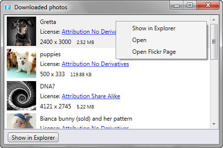

|
Searching for photos
You can search for a photographs matching a given term e.g. 'puppy' or 'paris' or 'paris eiffel'. You can restrict search by desired photo license and minimum size. You can also change the criteria by which photographs are sorted. Press 'Search' button to start the search. |
|
| Downloading photos
Up to 100 photos will be loaded at a time. To get another 100, press 'Load More' button. |

|
|
To download photos locally, use the right mouse button to get context menu and choose 'Download' option. Flickr Fotofi always downloads the biggest You can also use 'Open Flickr page' menu to open photo's Flickr page in the browser. This option is disabled in trial version. |
|
| Managing downloaded photos
After the photo is downloaded you'll see a window for managing downloaded photographs. You can also get it at any time via 'show downloaded' link in the main window. You can use context menu to show selected photo in the explorer, open the photo in a default application or open photo's Flickr page in the web browser. Please note that trial version adds a watermark to downloaded photos. |
 |